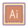
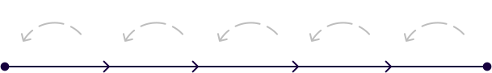
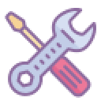
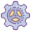

tl; dr
Best known for
Masterful command of Figma
User research

Proficiency across Adobe
Micro-interactions & animations
Accessibility standards
Progressive web app design
Native MacOS app design
Native Windows app design
More than 10 million people use the products I've worked on.
10
Ten years of experience in UI/UX, product design and user research.
Skills
Crafting captivating interfaces by leveraging user-centric design processes


Empathize
Define
Ideate

Prototype
Test

Implement